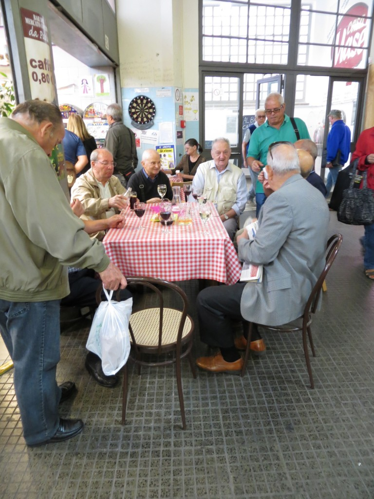

I love to see elderly people gathering around a red check tablecloth, sipping a glass of red wine, nibbling on some tartine, laughing and joking. I love to run into an old friend of mine that I haven't seen in more than 15 years, then seeing her again two days later and finally finding out that she is one of the teachers in my son's elementary school. I love to stop by the pizzeria al taglio in my neighborhood and have a friendly chat with the lady behind the counter (who sells the best pizza in town) and that I know since the times I was studying at the university. And even though I don't go to bars (which are coffee houses where they sell alcohol as well) I love to think that some people go there because they feel lonely and they know that they can find someone to spend a few minutes (or even hours) with. Italians really are social animals, they love people, they love to talk to people and be with them.Italians are social animals
If there's something I love about Italy and that I sometimes miss when I'm in the States is the social life, the fact that you run into people virtually every time you walk on the street without planning it.